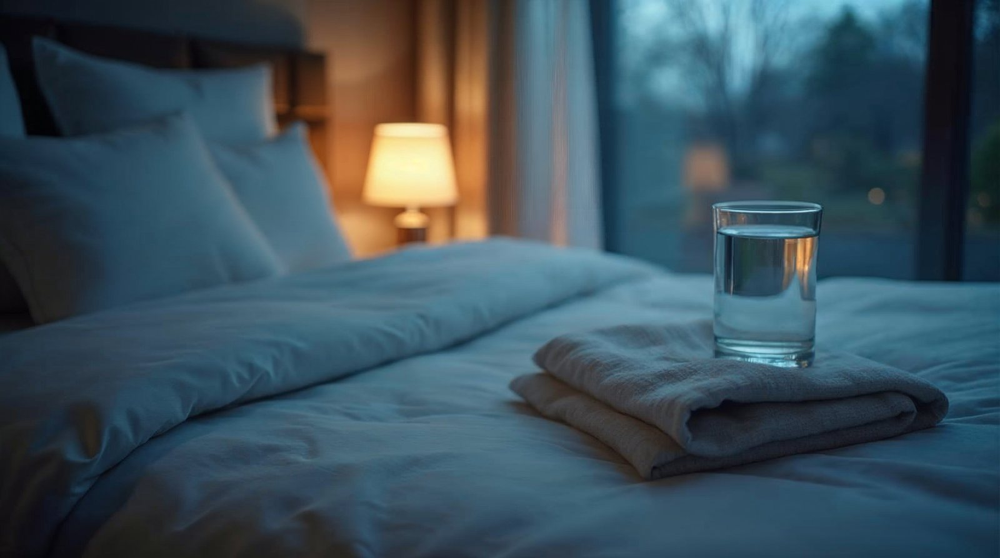
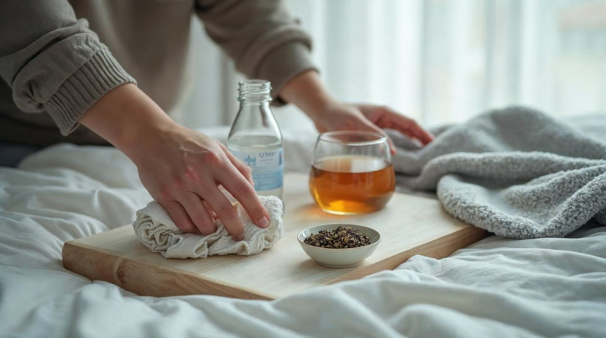
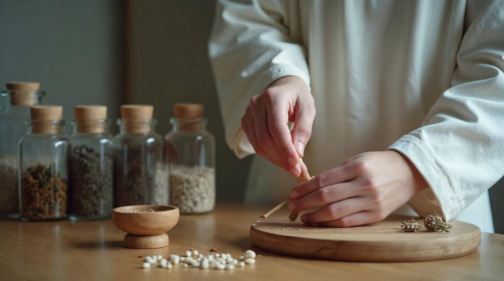
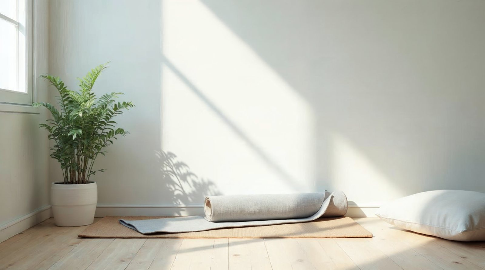
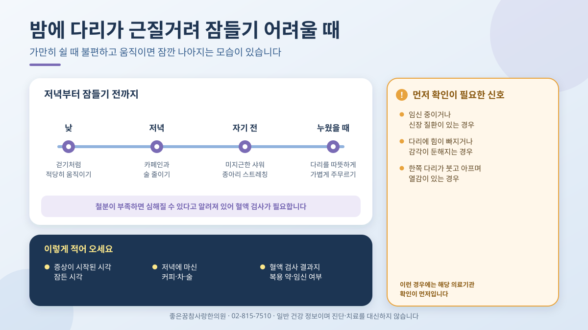

이종호 한의사 감수좋은꿈참사랑한의원 대표원장 (한의사 면허번호 19769)발행 2026-11-23 · 수정 2026-11-26
이 글의 차례
불을 끄고 누워 이제 좀 자야지 하는 순간, 종아리 깊은 곳이 스멀스멀 근질거립니다. 이렇게 잠들기 어렵다면 철분 부족처럼 확인이 필요한 원인이 있는지 병원 혈액 검사를 먼저 받아 보시길 권합니다. 그와 함께 증상이 오는 시간대와 잠, 복용 중인 약, 하루 활동을 살핍니다.
다리를 이불 밖으로 내밀었다가, 주물렀다가, 발목을 돌려 봐도 잠깐뿐입니다. 결국 일어나 방을 몇 바퀴 걸으면 가라앉는데, 다시 누우면 또 시작됩니다. 시계를 보면 어느새 새벽 두 시입니다.
진료실에서 이런 말씀을 자주 듣습니다. 아프다고 하기도, 저리다고 하기도 애매해서 가족에게조차 설명하기 어렵다고요. 다들 잠든 밤에 혼자 깨어 그 시간을 견디셨을 생각을 하면 마음이 쓰입니다.
다음 날 출근이나 집안일은 그대로인데 잠만 모자라니, 몸도 마음도 지칠 수밖에 없지요. 오늘은 그 밤을 조금 덜 길게 만들 방법을 짚어 보겠습니다.
왜 이런 불편이 생길 수 있나요
- 저녁과 밤, 가만히 쉬고 있을 때 다리 속이 불편해 움직이고 싶어지는 모습이 특징적인 경우가 있습니다.
- 몸에 철분이 부족하면 이런 불편이 생기거나 심해질 수 있다고 알려져 있어 검사가 필요합니다.
- 임신, 신장 질환, 일부 약도 관련될 수 있습니다.
- 카페인과 술, 잠 부족은 증상을 더 불편하게 만들 수 있습니다.
이런 모습을 흔히 하지불안이라고 부릅니다. 쉬거나 누워 있을 때 시작되고, 움직이는 동안은 가라앉고, 낮보다 저녁과 밤에 심해지는 것이 특징으로 알려져 있습니다. 진단은 진찰과 필요한 검사를 거쳐 병원에서 정합니다.
철분은 빈혈이 없다는 말을 들었어도 따로 살펴볼 수 있습니다. 몸에 저장된 철분이 적은 경우에도 이런 불편과 관련될 수 있다고 알려져 있어서, 어떤 항목을 볼지는 검사하는 병원과 상의하시면 됩니다.
철분이 모자랄 때 따라올 수 있는 어지럼과 피로, 식사 이야기는 빈혈이 있다는 말을 듣고 어지럽고 쉽게 지칠 때, 철분과 생활은 어떻게 살피나요?에 따로 정리해 두었습니다.
임신 중에는 이런 증상이 생기거나 심해질 수 있고, 신장 질환으로 치료받는 분에게도 나타날 수 있다고 알려져 있습니다. 이런 경우라면 다니시는 산부인과나 신장내과 선생님과 먼저 상의하시고, 한의원 진료를 원하시면 그 사실을 꼭 알려 주세요.
감기약이나 알레르기약, 속 메스꺼움을 줄이는 약, 일부 마음 관련 약처럼 이런 불편을 키울 수 있다고 알려진 약도 있습니다. 증상이 시작된 때와 약이 바뀐 때가 겹치는지 살펴보지만, 복용 중인 약은 처방한 의사와 상의 없이 줄이거나 끊지 않습니다.
왜 누우면 더 심해질까요
낮에는 움직이고 신경 쓸 일이 많아 다리 느낌이 묻혀 있다가, 불을 끄고 몸이 가만해지면 그 느낌이 앞으로 나옵니다. 우리 몸에는 하루의 리듬이 있어서, 이 불편이 저녁과 밤에 짙어지는 것을 그 리듬과 연결해 설명하기도 합니다.
그래서 저는 다리만 보지 않고 하루의 흐름을 같이 봅니다. 끼니를 몇 시에 드시는지, 저녁에 움직이는 시간이 있는지, 잠자리에 드는 시간이 일정한지가 밤의 다리와 이어져 있다고 보기 때문입니다.
몸이 찬 것도 살핍니다. 추운 날 다리가 더 불편하다고 느끼는 분도 있고, 같은 맥이라도 손발이 따뜻한 분과 찬 분은 살피는 방향이 다릅니다. 제가 몸 따뜻한 것을 회복의 바탕 가운데 하나로 꼽는 까닭이기도 합니다.

잠이 보약이라는 말을 붙드는 이유
저는 진료실에서 '잠이 보약'이라는 말을 늘 붙들고 있습니다. 잠은 하루를 쉬는 시간이기 전에 몸이 회복을 거치는 과정이라, 잠이 흔들리면 피로와 통증, 식욕까지 덩달아 흔들리기 쉽습니다.
잘 먹고, 잘 싸고, 잘 자고, 마음 편하고, 몸 따뜻하게. 제가 몸이 회복하는 바탕으로 보는 다섯 가지입니다. 밤마다 다리 때문에 잠을 설치면 이 가운데 잠이 먼저 무너지고, 다음 날 입맛과 기분까지 따라 흔들리기 쉽습니다.
그래서 다리 이야기를 하러 오셨다가 잠 이야기를 더 길게 하고 가시는 날도 있습니다. 다리를 달래는 일만큼, 밤을 다시 쉬는 시간으로 되돌리는 일이 함께 가야 하니까요.
자는 동안 다리를 자꾸 찬다거나, 코골이가 심하고 숨이 멎는 것 같다는 말을 들으셨다면 수면 검사가 가능한 의료기관을 안내합니다. 잠의 모양을 정확히 아는 것도 밤을 되찾는 데 필요한 일입니다.
쥐나 허리 저림과는 어떻게 다를까요
밤에 다리가 불편하다고 모두 같은 것은 아닙니다. 종아리가 갑자기 돌처럼 뭉치며 아프고 발가락이 오그라든다면 근육 경련, 흔히 말하는 쥐에 가깝습니다. 이때는 발끝을 몸 쪽으로 천천히 당겨 근육을 늘리면 풀리는 경우가 많습니다.
엉덩이에서 다리로 선을 따라 저림이 내려가고, 걷거나 특정 자세에서 심해진다면 허리 쪽을 살핍니다. 근질거림은 반대로 가만히 있을 때 올라오고 걸으면 가라앉는다는 점이 다릅니다.
쥐가 잦다면 밤마다 종아리에 쥐가 나서 깨는 근육 경련은 왜 생기고 무엇을 살피나요?를, 하지불안을 더 자세히 정리한 내용은 저녁만 되면 다리 속이 벌레 기어가듯 근질거려 가만히 있기 힘든 하지불안 증후군은 어떻게 살피나요?를 함께 읽어 보세요.
먼저 이렇게 여쭙니다
처음 오시면 저는 대략 이런 순서로 여쭙습니다. 밤의 일은 낮 진료실에서 떠올리기 어려우니, 기억나는 것부터 말씀해 주셔도 괜찮습니다.
- 증상은 주로 저녁이나 밤에 생기나요?
- 움직이면 잠깐 나아지나요?
- 혈액 검사(철분 등)를 받아 보셨나요?
- 복용 중인 약이 있나요?
- 자는 동안 다리가 저절로 움직인다는 말을 들은 적이 있나요?
- 다리 때문에 잠이 깨나요, 깬 뒤에 다리가 불편해지나요?
마지막 질문은 비슷해 보여도 밤에 겪는 일이 다릅니다. 다리 때문에 잠이 깨는 것과, 잠이 깬 뒤에 다리가 불편해지는 것은 살필 곳이 조금 다르거든요. 저는 어깨 통증을 볼 때도 이 둘을 나누어 여쭙습니다.
잠 이야기도 나누어 여쭙습니다. 잠을 못 잔다고 하셔도 잠이 안 드는 건지, 자주 깨는 건지, 일찍 깨서 다시 못 드는 건지에 따라 다음 이야기가 달라집니다.
저는 강의에서 중요한 일 전날 1시간 넘게 뒤척이거나 밤에 다섯 번 넘게 깨면 잠의 문제를 함께 살피는 기준을 소개하기도 했습니다. 다리가 불편한 분이라면 그 뒤척임이 다리 때문인지도 같이 봅니다.
스스로 점검해 보세요
아래 가운데 몇 가지가 해당되는지 세어 보세요.
- 저녁이나 밤, 가만히 있을 때 다리 속이 근질거리거나 불편하다
- 다리를 움직이거나 걸으면 그동안은 가라앉는다
- 누운 뒤 잠들기까지 30분 넘게 걸리는 날이 잦다
- 함께 자는 가족에게 자면서 다리를 찬다는 말을 들었다
- 오후 늦게 커피나 진한 차를 마신다
- 손발이 차고, 추운 날 다리가 더 불편하다
- 최근 1~2년 안에 혈액 검사를 받은 적이 없다
처음 두 가지가 모두 해당된다면 병원 진료에서 하지불안 여부를 이야기해 보시길 권합니다. 나머지는 생활에서 먼저 살필 곳을 알려 주는 단서이니, 표시해 두었다가 진료 때 보여 주세요.
이런 경우가 많습니다
예를 들어 하루 종일 서서 일하고 저녁을 늦게 먹은 뒤 바로 눕는 경우가 있습니다. 이럴 때는 저녁 식사 시간을 조금 앞당기고, 잠들기 전 따뜻한 물에 발을 담가 보는 것부터 정합니다.
예를 들어 퇴근 뒤 소파에 오래 앉아 휴대폰을 보다 그대로 잠자리에 드는 경우도 있습니다. 저녁에 20~30분 천천히 걷는 시간을 넣고, 잠자리에서는 휴대폰을 내려놓는 것부터 해 봅니다.
예를 들어 출산 뒤나 생리량이 많은 시기에 피로가 겹치며 다리 불편이 생긴 경우라면, 철분 상태를 병원 검사로 먼저 확인하시도록 권하고 잠과 식사도 살핍니다.

일상에서 먼저 해 볼 수 있는 것
- 잠들기 전 가볍게 종아리 스트레칭하기
- 저녁에 카페인과 술 줄이기
- 다리를 따뜻하게 하거나 가볍게 주무르기
- 증상이 생긴 시각과 정도를 기록하기
- 낮에 걷기처럼 적당히 몸을 움직이기
- 잠들기 전 미지근한 물로 샤워하기
저는 잠이 흔들리는 분께 약을 생각하기 전에 생활 리듬부터 말씀드립니다. 끼니를 날마다 비슷한 시간에 드시고, 저녁 식사는 잠들기 3시간 전쯤 가볍게 마치는 것. 몸이 하루의 흐름을 기억하도록 돕는 방법입니다.
운동은 거창하지 않아도 됩니다. 느릿느릿 동네를 한 바퀴 도는 것으로 시작해도 좋습니다. 저녁 걷기는 숨이 찰 정도가 아니라 옆 사람과 이야기를 나눌 수 있을 만큼이면 충분합니다. 잠들기 직전에 땀이 날 만큼 움직이면 오히려 몸이 깨어날 수 있어, 운동은 낮이나 이른 저녁에 하시는 편이 좋습니다.
잠들기 1~2시간 전 따뜻한 물에 몸을 담그거나, 시간이 없으면 발만 10~15분 담가 보세요. 너무 뜨거우면 오히려 다리가 달아오른다는 분도 있어, 미지근한 쪽에서 내 몸에 맞는 온도를 찾으시면 됩니다.
다리를 주무를 때는 오일을 조금 발라 종아리를 아래에서 위로 쓸어 올리거나, 앉아서 작은 공을 발바닥 아래 두고 1~2분 굴려 보세요. 시원하면 이어 가고, 오히려 쥐가 나거나 불편이 늘면 그날은 멈추는 것이 기준입니다.
누웠는데 다리 때문에 잠이 오지 않으면 억지로 버티지 말고 잠깐 일어나 걸어 보세요. 밝은 불 대신 발밑을 비추는 작은 등만 켜 두고, 다리가 가라앉고 졸음이 오면 다시 누우시면 됩니다. 주말에도 일어나는 시각은 평일과 1시간 안쪽으로 맞추는 편이 리듬을 지키기 쉽습니다.
커피는 한꺼번에 끊기보다 오후 커피부터 줄여 보세요. 술은 잠드는 데 도움이 되는 것 같아도 밤중에 자주 깨게 만들 수 있습니다. 못 지킨 날이 있어도 스스로를 탓하지 말고 다음 날 다시 하면 됩니다.

한의원에서 함께 살필 수 있는 경우
- 병원 검사 뒤에도 다리 불편으로 잠들기 어려운 경우 잠의 모양과 다리 근육 긴장을 함께 살핍니다.
- 하루 종일 서 있거나 앉아 있어 다리가 무거운 경우 생활 자세와 순환을 함께 살핍니다.
- 잠이 부족해 낮 피로가 큰 경우 생활 리듬을 함께 살핍니다.
좋은꿈참사랑한의원에 오시면 양손을 올려 달라고 말씀드리고 맥부터 짚습니다. 걸어오신 직후에는 맥이 달라지니 잠시 숨을 고르신 뒤에 봅니다.
맥을 짚으면서 증상이 오는 시간과 잠, 복용 중인 약을 충분히 여쭙습니다. 맥을 짚고 떠올린 생각은 대답에 따라 고쳐야 할 때가 있어, 짚는 동안에도 말씀을 계속 듣습니다. "그건 아닌데요" 하시면 저는 거기서부터 다시 듣습니다.
제가 진맥을 설명할 때 쓰는 말이 있습니다. "맥은 그림자입니다. 실체가 아니라, 지금 몸이 어떻게 버티고 있는지 비춰 주는 그림자를 느끼는 것입니다." 그래서 맥 하나로 결론을 내리지 않고, 검사 결과와 밤의 기록을 나란히 놓고 봅니다.
필요하면 혀와 배를 살피고, 종아리와 허벅지가 얼마나 굳어 있는지, 다리 힘은 어떤지 손으로 확인합니다. 가져오신 혈액 검사 결과지도 이때 같이 봅니다.
그 위에서 침, 한약 상담 가운데 상태에 맞는 방법을 정합니다. 한약은 진찰 뒤 필요하다고 판단될 때 상의하고 원내에서 달입니다. 드시는 약이나 철분제가 있으면 이름을 모두 알려 주세요.
누워서 치료받는 동안에도 다리가 근질거려 올 수 있습니다. 그럴 때는 참지 말고 바로 말씀해 주세요. 저는 치료가 되도록 편안해야 한다고 생각하고, 자세나 온도가 불편하다고 하시면 다시 봅니다.
평일 진료 시간은 09:30~20:00(점심 13:00~14:00)입니다. 마감 가까이 오실 때는 접수 가능 여부를, 원장별 진료 일정과 함께 방문 전 전화(02-815-7510)로 확인해 주세요.
귀가 전에는 잠들기 전에 해 볼 스트레칭과 이번 주에 바꿔 볼 생활 리듬 한두 가지를 함께 정합니다. 다시 오시는 날에는 지난번에 자다가 깨신다고 하셨던 것이 요즘은 어떤지부터 여쭙습니다.
처음 만나 묻는 것과, 들은 이야기를 이어서 묻는 것은 다르다고 생각합니다. 다시 맥을 짚을 때 제게는 그분과 나눈 지난 대화가 있으니까요.

이렇게 기록해 오시면 상담이 쉬워집니다
- 증상이 시작되는 시각과 잠든 시각
- 저녁에 마신 커피, 차, 술
- 혈액 검사 결과지(철분 관련 수치 포함)
- 가족에게 들은 잘 때 다리 움직임
- 복용 중인 약과 임신 여부
기록이 막막하면 네 가지만 보셔도 됩니다. 언제 시작되는지, 얼마나 자주 오는지, 한 번 오면 얼마나 가는지, 무엇을 하면 가라앉는지. 제가 허리 통증을 경고등에 빗대어 읽을 때 여쭙는 네 가지와 같습니다.
2주만 휴대폰 메모에 짧게 적어 보세요. 빠진 날이 있어도 괜찮습니다. 그 몇 줄이 낮 진료실에서는 떠올리기 어려운 밤의 모습을 대신 말해 줍니다.
밤은 누구에게나 쉬라고 있는 시간인데, 그 시간을 다리와 씨름하며 보내셨으니 얼마나 고단하셨을까요. 서두르지 않고, 무엇이 밤을 흔드는지부터 함께 정리해 보겠습니다.
다음에 오시면 지난 2주 동안 잠든 시각과 다리가 불편했던 시각부터 여쭙겠습니다.
이런 증상은 먼저 확인이 필요합니다
- 한쪽 종아리가 갑자기 붓고 붉어지며 뜨겁고 아픈 경우
- 다리에 힘이 빠지거나 감각이 둔해지는 경우
이런 신호가 있으면 한의원보다 가까운 병원이나 응급실을 먼저 찾으세요.

여쭙는 것
- 증상은 주로 저녁이나 밤에 생기나요?
- 움직이면 잠깐 나아지나요?
- 혈액 검사(철분 등)를 받아 보셨나요?
생활에서 해 볼 것
- 잠들기 전 가볍게 종아리 스트레칭하기
- 저녁에 카페인과 술 줄이기
- 다리를 따뜻하게 하거나 가볍게 주무르기
한의원에서 함께 살필 것
- 병원 검사 뒤에도 다리 불편으로 잠들기 어려운 경우 잠의 모양과 다리 근육 긴장을…
- 하루 종일 서 있거나 앉아 있어 다리가 무거운 경우 생활 자세와 순환을 함께 살핍니다.
- 잠이 부족해 낮 피로가 큰 경우 생활 리듬을 함께 살핍니다.
먼저 확인이 필요한 신호
- 한쪽 종아리가 갑자기 붓고 붉어지며 뜨겁고 아픈 경우
- 다리에 힘이 빠지거나 감각이 둔해지는 경우
한눈에 보는 표
| 구분 | 핵심 |
|---|---|
| 여쭙는 것 | 증상은 주로 저녁이나 밤에 생기나요? 움직이면 잠깐 나아지나요? |
| 생활에서 해 볼 것 | 잠들기 전 가볍게 종아리 스트레칭하기 저녁에 카페인과 술 줄이기 |
| 한의원에서 함께 살필 것 | 병원 검사 뒤에도 다리 불편으로 잠들기 어려운 경우 잠의 모양과 다리 근육 긴장을 함께 살핍니다. 하루 종일 서 있거나 앉아 있어 다리가 무거운 경우 생활 자세와 순환을 함께 살핍니다. |
| 먼저 확인이 필요한 신호 | 한쪽 종아리가 갑자기 붓고 붉어지며 뜨겁고 아픈 경우 다리에 힘이 빠지거나 감각이 둔해지는 경우 |
자주 묻는 질문
철분 검사를 먼저 받아야 하나요?
철분 부족과 관련된 경우가 있어 병원 혈액 검사를 권합니다. 어떤 항목을 볼지는 검사하는 병원과 상의하시고, 결과지를 가져오시면 함께 봅니다.
한의원에서는 무엇을 묻나요?
모든 분께 맥을 짚으며 증상이 오는 시각과 잠, 하루 활동, 복용 중인 약을 여쭙습니다.
철분제를 스스로 사서 먹어도 되나요?
검사로 부족한지 확인한 뒤 의사나 약사와 상의해 드시길 권합니다. 필요 이상으로 오래 드시면 오히려 몸에 부담이 될 수 있습니다.
진료 시간은 어떻게 되나요?
좋은꿈참사랑한의원은 평일 09:30~20:00(점심 13:00~14:00), 토·일·공휴일 09:30~15:00에 진료합니다.
좋은꿈참사랑한의원은 재진 때 지난번 이야기부터 이어서 여쭙니다. 진료시간과 예약은 오시는 길에서 확인하세요.
어디서 상담받을 수 있나요?
좋은꿈참사랑한의원은 서울 동작구 만양로2길 2 신성빌딩 3층·5층(서울 동작구 상도동, 7호선 상도역 3번 출구 근처)에 있습니다. 한의사 3명(이종호 대표원장, 조영기 수석진료원장, 정원영 진료원장)이 진료합니다. 진료시간은 평일 09:30~20:00(점심 13:00~14:00), 토·일·공휴일 09:30~15:00이며, 방문 전 전화로 확인을 권합니다. 예약은 네이버 예약, 카카오톡 상담, 전화 02-815-7510로 받습니다.
이 글은 일반적인 건강 정보이며 개인의 진단이나 치료를 대신하지 않습니다. 증상이 있거나 복용 중인 약이 있다면 진료를 통해 확인하세요. 치료 효과는 개인마다 다를 수 있습니다.
작성 기준: 일반적으로 알려져 있는 건강 정보를 참고해 정리했습니다(대표원장 감수). 증상 기록은 1~2주 동안 하루 1회, 비슷한 시간에 적어 오시면 지난 상태와 비교하기 쉽습니다.